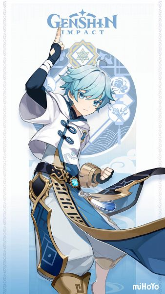
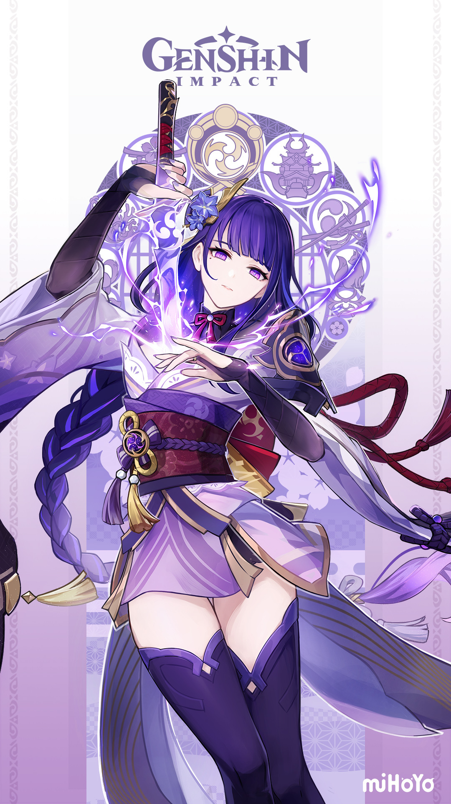
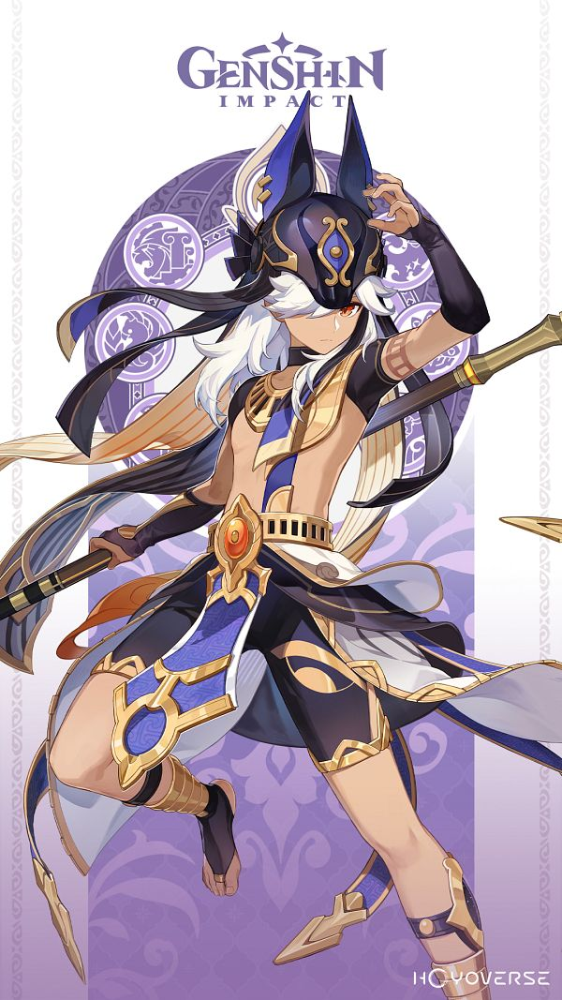
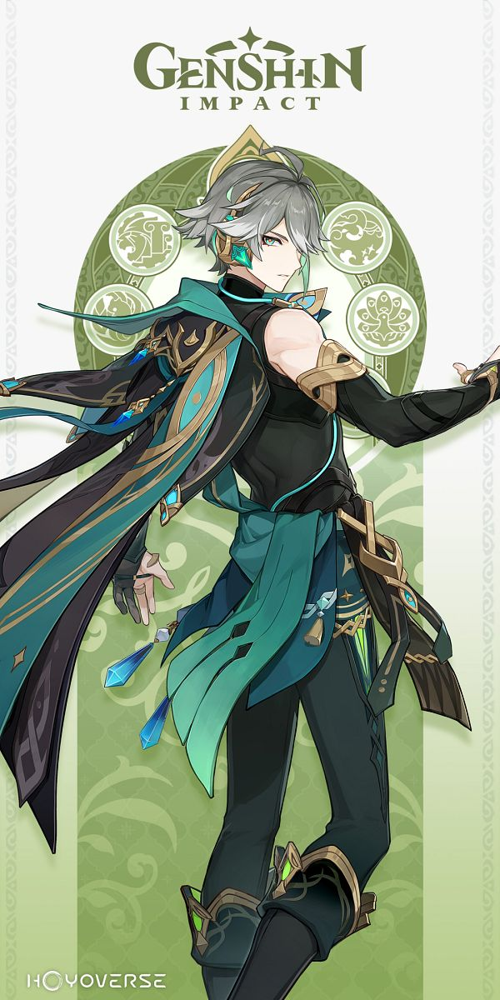

MONDSTADT
The City of Freedom

Venti the Bard
[5-Star Anemo Bow]
He is the Anemo Archon but lives
among the people of Mondstadt drinking wine and singing
on a bar.
He is allergic to cats and likes to drink wine a lot.

Diluc Ragnvindr
[5-Star Pyro Claymore]
He is the
owner of Dawn Winery. He is Mondstadt's secret protector,
a former knight, and a popular Bachelor.
He does not drink
wine despite owning a winery.
Kaeya Alberich
[4-Star Cryo Sword]
He is the Cavalry Captain of the
Knights of Favonius. He is the half-brother of Diluc even though
they are not related by blood. He is from Khaenri'ah, homeland of Traveler.
Albedo "Kreideprinz"
[5-Star Geo Sword]
A synthetic human made by the alchemist Rhinedottir,
the mysterious Albedo is the Chief Alchemist and
Captain of the Investigation
Team of the Knights of Favonius. He once had a Whopperflower Albedo mimic.
Razor
[4-Star Electro Claymore]
Lived and grew up with wolves, the wolf boy
was discovered by Grandmaster Varka and was the one who
named him Razor because
of his sharp teeth.
Bennett
[4-Star Pyro Sword]
One of the few young adventurers of the Mondstadt
Adventurers' Guild, he is always plagued with inexplicable bad luck.
Maybe the
reason why he is the only active member of his own adventure group known as
"Benny's Adventure Team".
Amber
[4-Star Pyro Bow]
As the only remaining Outrider of the Knights of Favonius,
she is always ready to help the citizens of Mondstadt —
whether it be something simple
or perhaps a more challenging task.
Lisa
[4-Star Electro Catalyst]
A powerful mage recognized as Sumeru Akademiya's most
distinguished graduate in 200 years,
Lisa has since returned to Mondstadt to become the
humble Librarian of the Knights of Favonius.
Barbara Pegg
[4-Star Hydro Catalyst]
She is the deaconess of the Church of Favonius and a prominent
"idol" after learning about them from the
intrepid adventurer Alice. She is also the younger
sister of the Acting Grand Master Jean.
Klee
[5-Star Pyro Catalyst]
The daughter of the intrepid and often quite destructive adventurer
Alice, Klee takes after her mother
in many ways, much to the dismay of the Knights of Favonius
whom she has been entrusted to.
Albedo is mostly her guardian.
LIYUE
The Land of Contracts
Zhongli
[5-Star Geo Polearm]
A consultant of the Wangsheng Funeral Parlor, he is later revealed to
be the current vessel of the Geo Archon, Morax.
He is also known as the God of Contracts.
Xiao
[5-Star Anemo Catalyst]
He is an adeptus, under the name Alatus, and the sole surviving
member of the five foremost Yakshas
dispatched by Morax to subdue the demonic spirits that plagued
Liyue. He was saved by Morax from an evil god
and was named Xiao thereafter.
Ganyu
[5-Star Cryo Bow]
She is a half-qilin Adeptus under contract with the Geo Archon, Morax, and
serves as the general secretary of the Liyue Qixing.
Cloud Retainer once said that she choked a
monster before that was trying to eat her just because of her wide hips.
Hu Tao
[5-Star Pyro Polearm]
Hu Tao's antics and eccentricity belies her role as the 77th Director
of the Wangsheng Funeral Parlor and her talent as a poet.
She likes hunting Qiqi and wanting to bury her,
poor zombie kid.
Baizhu
[5-Star Dendro Catalyst]
The owner of Bubu Pharmacy and Qiqi’s guardian. Doctor Baizhu is a
master of the medicinal arts and the latest recipient
of a generational contract with a white snake named
Changsheng.
Beidou
[4-Star Electro Claymore]
She is the captain of The Crux, a renowned crew in Liyue. Kaedehara Kazuha
tend to hang around her Crux
and traveler with her on her journey around Teyvat.
Xinqiu
[4-Star Hydro Sword]
He is the second son of the Guild Manager of the Feiyun Commerce Guild, an
influential group in Liyue,
and is also a self-proclaimed practitioner of the Guhua Clan's arts.
Ningguang
[4-Star Geo Catalyst]
The Tianquan of the Liyue Qixing and owner of the floating Jade Chamber
in the skies of Liyue. She is a mogul who shakes
the very foundations of business circles. In short,
she is a very rich and influential type of lady.

Chongyun
[5-Star Cryo Claymore]
He is an exorcist but due to his inborn excess yang (positive) energy that drives
evil spirits away immediately,
he hasn't even seen a spirit himself. He's bad at spicy and always eats cold food.
Tartaglia "Childe"
[5-Star Hydro Bow]
He is the Eleventh of the Eleven Fatui Harbingers. He has a lot of Mora and loves his family.
He's adept to all kinds of weapon but not bow. Thus, he wants to use it to be adept to it.
INAZUMA
The Island of Thunder and Eternity

Raiden Shogun
[5-Star Electro Polearm]
The Raiden Shogun is unique as she is comprised of two beings in one body: Ei,
the current Electro Archon of Inazuma;
and the Shogun, the puppet created by Ei to act as the ruler of Inazuma in her
stead, which also serves as her vessel.
Yoimiya
[5-Star Pyro Bow]
Yoimiya is the current owner of Naganohara Fireworks; with her colorful fireworks
and outgoing personality,
Yoimiya is loved by everyone on Narukami Island.
Kamisato Ayato
[5-Star Hydro Polearm]
He is the current head of the Kamisato Clan, the older brother of Kamisato Ayaka,
and the Yashiro Commissioner.
He loves drinking milktea boba and doesn't always have money with him.
Thoma
[4-Star Pyro Polearm]
Hailing from Mondstadt, Thoma is the sociable and responsible housekeeper for
the Kamisato Clan and
a well-known "fixer" in Inazuma. He is like a walking coupon by his way of asking discounts from sellers.
Arataki Itto
[5-Star Geo Claymore]
A loud and proud descendant of the crimson oni, Itto is also the leader and founder of the
Arataki Gang.
He is very allergic to beans and he always wants to challenge Kujou Tengu (Sara).
Kaedehara Kazuha
[5-Star Anemo Sword]
A wandering samurai of the once-famed Kaedehara Clan with an ability to read the sounds
of nature, Kazuha is a
temporary crewmember of The Crux.
Shikanoin Heizou
[4-Star Anemo Catalyst]
He is the number one Tenryou Commission detective, harboring a rivalry with the Bantan
Sango Detective Agency's Sango.
His skills looks like a punch more than being a catalyst.
Kamisato Ayaka
[5-Star Cryo Sword]
She is in charge of the internal and external affairs of the Kamisato Clan and is the
younger sister of Kamisato Ayato.
She really likes the male traveler.
Kujou Sara
[4-Star Electro Bow]
A tengu, Sara is the adopted daughter of the Kujou Clan of the Tenryou Commission.
Loyal to both her clan and the Shogun,
she carries out her orders by the Shogun's will.
Yae Miko
[5-Star Electro Catalyst]
A very cunning kitsune of many facets, Yae Miko oversees the Grand Narukami Shrine, owns the
Yae Publishing House,
and is Eternity's servant and friend. She is Raiden Ei's familiar.
SUMERU
The Forest of Wisdom
Nahida
[5-Star Dendro Catalyst]
She is the vessel of Buer, as Lesser Lord Kusanali, the current Dendro Archon.
Having been freed from
her extensive confinement in the Sanctuary of Surasthana, she now strives to have a stronger presence in Sumeru.
Tighnari
[5-Star Dendro Bow]
Tighnari is the stern Chief Officer of the Forest Rangers and Collei's mentor. Despite his intelligence,
he prefers to live a solitary life in the depths of Avidya Forest rather than in the ivory tower of Sumeru Akademiya.

Cyno
[5-Star Electro Polearm]
As the General Mahamatra, Cyno leads the Matra and strikes fear into the hearts of researchers
of the Sumeru Akademiya.
In spite of this, Cyno has a fun side outside of his role in the Akademiya, as he constantly cracks unfunny jokes.

Wanderer
[5-Star Anemo Catalyst]
He is a creation of Raiden Ei, her son. He was called Scaramouche, also known as Kunikuzushi
or
by his Fatui codename "Balladeer," was the Sixth of the Eleven Fatui Harbingers before becoming Wanderer.

Alhaitham
[5-Star Dendro Sword]
Alhaitham is a member of the Haravatat of the Sumeru Akademiya and the Akademiya's Scribe,
responsible for documenting their findings and drafting ordinances.
Kaveh
[4-Star Dendro Claymore]
The architect behind the Palace of Alcazarzaray, Kaveh was a student of the Kshahrewar
Darshan of the Sumeru Akademiya
and graduated with honors, earning the moniker "Light of Kshahrewar."

Dehya
[5-Star Pyro Claymore]
A fierce and strong warrior, the "Flame-Mane" Dehya is considered a legend among the Eremites
for her might,
passion, and conscientiousness. Unwilling to be trapped by the conditions that force most from the desert to stay
there,
she aspires to deliver hope back to the sands that she considers her home.
Layla
[4-Star Cryo Sword]
She is a student in the Rtawahist Darshan, specializing in Theoretical Astrology. Chronically
sleep-deprived and of poor health as a result, Layla believes that "The Stars' Blessing" is the reason she wakes from sleepwalking
to find her papers fully completed.
Collei
[4-Star Dendro Bow]
She has appeared in the official Manga and serves as one of its main characters. Originally a
victim of
Fatui human experimentation, Collei wandered the world as a vagrant until she met Amber in Mondstadt.
Nilou
[5-Star Hydro Sword]
A dancer under the Zubayr Theater, Nilou's dancing is but elegant and graceful — however,
outside the stage's spotlight, she's just like any girl her age; warm, smiling, and friendly.